To set up Flutter on both Windows and Mac OS, follow these step-by-step instructions:
Setting Up Flutter on Windows
➼ System Requirements
- Operating System : Windows 10 or later (64-bit)
- Storage : Windows 10 or later (64-bit)
- Required Tool : Git for Windows
➼ Download Flutter SDK
- Visit the official Flutter website
- Download the latest stable version of the Flutter SDK (ZIP file).
- Extract the ZIP and move the flutter folder to a preferred location e.g.,C:\src\flutter.
➼ Add Flutter to System Path
- Open Start Menu, search for “Environment Variables”, and click “Edit the system
environment variables”.
- In the System Properties window, click Environment Variables.
- Under User variables, locate the Path variable
- If it exists, click Edit and append the path to flutter\bin
(e.g., C:\src\flutter\bin) at the end, separated by a ;.
- If it doesn’t exist, click New, name it Path, and enter the
path to flutter\bin.
- Verify Installation with Flutter Doctor.
- Open Command Prompt.
Run the command: flutter doctor
- This will analyze your environment and report missing dependencies (like Android Studio or
toolchains).
➼ Install Android Studio
- Download Android Studio from developer.android.com
- Launch the installer and complete the setup wizard, which installs:
- Android SDK
- Android SDK Command-line Tools
- Android SDK Build-Tools
- After installation:
- Go to Android Studio > Settings (or Preferences on macOS) > Plugins
- Search and install both Flutter and Dart plugins.
➼ Set Up an Android Emulator
- Open Android Studio
- Go to Tools > AVD Manager
- ollow the prompts to create and configure a new Android Virtual Device
(AVD).
➼ Final Setup Check
- Run the following again to ensure everything is set up: flutter doctor
- Resolve any remaining issues shown in the output
Setting Up Flutter on MacOS
➼ System Requirements
- Operating System : macOS 10.14 (Mojave) or newer
- Storage : At least 2.8 GB (excluding IDE/tools)
➼ Install Flutter SDK
- Go to the official Flutter website: https://flutter.dev/docs/getstarted/install/macos
- Download the latest stable version of the Flutter SDK (ZIP format).
- Extract the ZIP file and move the flutter directory to a desired
location,
e.g., ~/flutter.
➼ Add Flutter to Your System PATH
- Open your terminal.
- Open (or create) the ~/.zshrc file in a text editor: nano ~/.zshrc
- Add the following line to include Flutter’s binary in your path: export
PATH="$PATH:$HOME/flutter/bin"
- Save the file and run: source ~/.zshrc
- This applies the changes to your current terminal session.
➼ Verify Installation with Flutter Doctor
- Run the following command: flutter doctor
- This tool checks your system setup and reports any missing
- dependencies (like Xcode or Android Studio)
➼ Install Xcode (for iOS Development)
- Download Xcode from the Mac App Store
- Launch Xcode and complete its initial setup steps.
➼ Install CocoaPods
- CocoaPods is used to manage iOS project dependencies. Install it via terminal: sudo gem install cocoapods
➼ Install Android Studio
- Download Android Studio from developer.android.com
- Launch the installer and complete the setup wizard, which installs:
- Android SDK
- Android SDK Command-line Tools
- Android SDK Build-Tools
- After installation:
- Go to Android Studio > Settings (or Preferences on macOS) > Plugins
- Search and install both Flutter and Dart plugins.
➼ Set Up iOS Simulator
- Open Xcode.
- Navigate to Xcode > Preferences > Components.
- Download the desired iOS Simulator version (usually the latest).
➼ Set Up Android Emulator
- In Android Studio, go to Tools > AVD Manager.
- Follow the prompts to create a new Android Virtual Device (AVD).
➼ Final Setup Check
- Run Flutter Doctor again: flutter doctor
- Ensure there are no remaining issues in the output.
Prerequisites
- Flutter SDK is installed
- A Flutter project is already created
- You understand the basic Flutter project structure
Android
Update AndroidManifest.xml:
- Navigate to: android/app/src/main/AndroidManifest.xml
- Find the application tag
- Modify or add the android:label attribute to set your new app name:
<application
android:name="${applicationName}"
android:icon="@mipmap/ic_launcher"
android:label="Customer"
...
</application>
Update strings.xml:
- Open the file at: android/app/src/main/res/values/strings.xml
- Locate the app_name string and update it with your new app name:
<string name="app_name">Your New App Name</string>
IOS
Update Info.plist:
- Go to: ios/Runner/Info.plist
- Locate the key for CFBundleName and change its value:
<key>CFBundleName</key>
<string>Your New App Name</string>
Update Display Name in Xcode:
- Open your project in Xcode: ios/Runner.xcodeproj or ios/Runner.xcworkspace
- In the project navigator, select the Runner project:
- Click on the General tab.
- Find the Display Name field and update it to your desired app name.
Web
Update HTML Title:
- Open: web/index.html
- Inside the <head> section, update the content of the <title> tag:
<head>
...
<title>Your New App Name</title>
...
</head>
Changing the package name of a Flutter project involves updating multiple files
and configurations for both Android and iOS platforms. Below are the detailed
steps to change the package name.
Android
Update the applicationId in build.gradle:
- Open: android/app/build.gradle
- Inside the defaultConfig block, find the applicationId.
- Replace it with your new package name:
defaultConfig{
applicationId "com.new.package.name"
}
Rename Java Package Directories:
- Go to: android/app/src/main/java/
- You’ll see directories reflecting your old package path
(e.g.,com/old/package/name).
- Rename each subfolder to match the new package structure
(e.g.,com/new/package/name).
- Make sure the new folder path matches the structure in your updated applicationId.
- Update the Package Name in AndroidManifest.xml
.
Update the Package Name in AndroidManifest.xml:
- Open: android/app/src/main/AndroidManifest.xml
- Update the package attribute in the root <manifest> tag:
<manifest xmlns:android="http://schemas.android.com/apk/res/android"
package="com.new.package.name">
</manifest>
Update Other Manifest Files:
- Also update the: packageattribute in the following files:
android/app/src/debug/AndroidManifest.xml
android/app/src/profile/AndroidManifest.xml
- Use the same new package name.
IOS
Update PRODUCT_BUNDLE_IDENTIFIER in Xcode:
- Open the iOS project in Xcode: ios/Runner.xcodeprojOR ios/Runner.xcworkspace
- In the project navigator, select theRunner project.
- Click on the Runner target, then go to the Build Settings tab
- Search for PRODUCT_BUNDLE_IDENTIFIER
Replace it with your new iOS bundle identifier (e.g., com.new.package.name).
Update Bundle Identifier in Info.plist:
- Open the file: ios/Runner/Info.plist
- Locate theCFBundleIdentifier key.
<key>CFBundleName</key>
<string>Your New App Name</string>
Android
Replace Default Icons:
- Create your custom app icons in various densities
- Sizes typically needed: mdpi, hdpi, xhdpi, xxhdpi, xxxhdpi
Navigate to: android/app/src/main/res/
Inside the res folder, locate the following directories:
- Mipmap-mdpi
- Mipmap-hdpi
- Mipmap-xhdpi
- Mipmap-xxhdpi
- Mipmap-xxxhdpi
- Replace the existing ic_launcher.png files in each of these folders with
your own custom icon (same filename).
Update Icon Reference in AndroidManifest.xml:
- Open: android/app/src/main/AndroidManifest.xml
- Find the <application> tag.
- Make sure the android:icon points to your custom icon name (usually still
@mipmap/ic_launcher):
<application
android:name="io.flutter.app.FlutterApplication";
android:icon="@mipmap/ic_launcher";
... >
</application>
IOS
Replace AppIcon Set:
- Prepare your custom icons in iOS-specific sizes and formats.
- Replace the contents of the folder:
ios/Runner/Assets.xcassets/AppIcon.appiconset/
Ensure your icon set follows Apple’s size and naming requirements.
Update Icon Name in Info.plist:
- Open: ios/Runner/Info.plist
- Locate the following entry:
<key>CFBundleName</key>
<string>Your New App Name</string>
- Make sure the string matches the name of your icon set (usually AppIcon).
Flutter Web
For Flutter web, you typically use the favicon to represent your application. To
change the favicon:
Replace Favicon:
- Design your favicon in proper size and format (typically favicon.ico or
PNG).
- Go to your Flutter project’s web/ directory.
Replace the existing favicon.png or favicon.ico with your own file using the
same name to maintain reference.
Notes:
This All setup are Same apply for Admin Panel.
1. Install Firebase CLI Tools
- To use Firebase tools from the command line, make sure the Firebase CLI is installed globally:
npm install -g firebase-tools
2. Authenticate Firebase CLI
- Run the following command to log in to your Firebase account:
firebase login
- A browser window will open to complete authentication with your Google account.
3. Create a Firebase Project
- If you haven’t set up a Firebase project yet, you can create one directly from the terminal:
firebase projects:create
- You’ll be prompted to enter a name and other details for your new Firebase project.
OR
- You can create one via the Firebase Console.
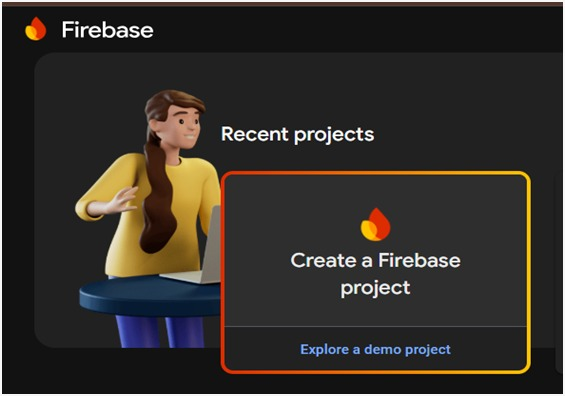
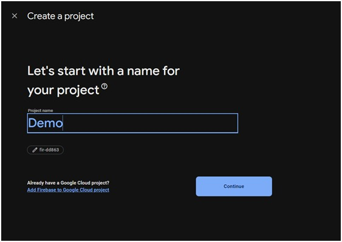
- Enter name and press Continue. After press create Project.
And it will create your project in firebase.
- Now Add app in Firebase :
- Click on Flutter Icon to add app after it show two Command to add
firebase in your app.
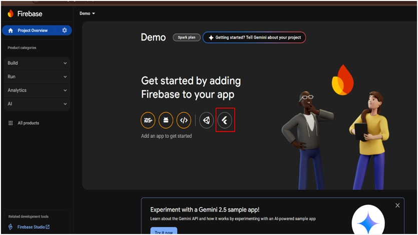
- Apply below command in project folder terminal one by one:
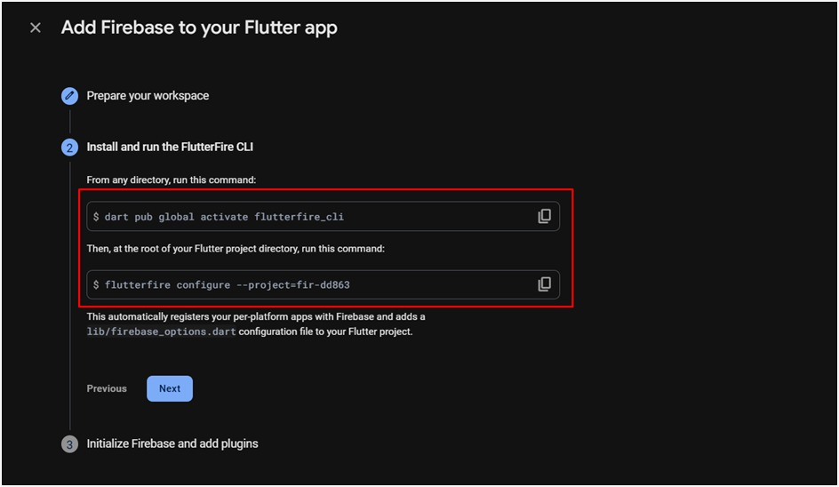
- After apply It click on Next. And Continue to
console.
4. Initialize Firebase in Your Flutter App
- Open your terminal and navigate to the root directory of your Flutter project.
- Run the initialization command:
firebase init
Follow the prompts to:
- Select the Firebase services you want to enable (e.g.,
Firestore,Authentication, Hosting, etc.)
- Choose the Firebase project you want to link with this app.
5. Use Firebase Services
- Once Firebase is initialized:
- Add the necessary Firebase packages to your pubspec.yaml, for example:
dependencies:
firebase_core: ^latest
firebase_auth: ^latest
flutter pub get
Follow the official FlutterFire documentation to configure Firebase for each
platform (Android, iOS, Web).
1. Create a Firebase Project
- Go to the Firebase Console.
- Click “Add project”.
- Follow the guided steps to create a new Firebase project.
- After setup, you’ll be redirected to the Firebase project dashboard.
2. Add Your Flutter App to Firebase
Android Setup:
- From the Firebase Console dashboard, click on the Android icon to register an
Android app.
- Enter your Android package name (e.g., com.example.myapp). You can find
this in your Flutter project under: android/app/src/main/AndroidManifest.xml.
- Download the google-services.json file provided after registration.
- Move the google-services.json file into your project at: android/app/.
IOS Setup:
- In Firebase Console, click on the iOS icon to register your iOS app.
- Enter your iOS bundle ID (e.g., com.example.myapp). This is found in your
Xcode project settings.
- Download the GoogleService-Info.plist file provided after setup. In
Xcode:
- Open your Flutter iOS project (ios/Runner.xcworkspace).
- Drag and drop the GoogleService-Info.plist file into the Runner
project in Xcode (make sure to check “Copy items if needed”)
3. Start Using Firebase Services
Once the app is registered and files are added:
- Add Firebase packages to pubspec.yaml based on the services you need, such
as:
firebase_core: ^latest
firebase_auth: ^latest
cloud_firestore: ^latest
flutter pub get
Follow FlutterFire documentation for each service.
4. Configure DefaultFirebaseOptions
- This step ensures that your app selects the correct Firebase config at runtime
depending on the platform (Android, iOS, Web).
- Generate firebase_options.dart
- Use the official FlutterFire CLI to auto-generate this file:
flutterfire configure
This command will create lib/firebase_options.dart with your
configuration.
import 'package:firebase_core/firebase_core.dart';
import 'package:flutter/foundation.dart';
class DefaultFirebaseOptions {
static FirebaseOptions get currentPlatform {
if (kIsWeb) {
return const FirebaseOptions(
apiKey: 'your-web-apiKey',
appId: 'your-web-appId',
messagingSenderId: 'your-web-senderId',
projectId: 'your-web-projectId',
authDomain: 'your-web-authDomain',
storageBucket: 'your-web-storageBucket',
measurementId: 'your-web-measurementId',
)
} else if (defaultTargetPlatform == TargetPlatform.iOS || defaultTargetPlatform == TargetPlatform.macOS) {
return const FirebaseOptions(
apiKey: 'your-ios-apiKey',
appId: 'your-ios-appId',
messagingSenderId: 'your-ios-senderId',
projectId: 'your-ios-projectId',
storageBucket: 'your-ios-storageBucket',
iosClientId: 'your-ios-clientId',
iosBundleId: 'your-ios-bundleId',
);
} else {
return const FirebaseOptions(
apiKey: 'your-android-apiKey',
appId: 'your-android-appId',
messagingSenderId: 'your-android-senderId',
projectId: 'your-android-projectId',
storageBucket: 'your-android-storageBucket',
)
}
}
};
5. Initialize Firebase in main.dart
void main() async {
WidgetsFlutterBinding.ensureInitialized();
await Firebase.initializeApp(
options: DefaultFirebaseOptions.currentPlatform,
);
runApp(MyApp());
}
1. Enable
- Go to the Firebase Console.
- Select your project from the dashboard.
- In the left sidebar, click on “Authentication”.
- Navigate to the “Sign-in method” tab.
- Locate “Phone” and click on the edit icon.
- Toggle the switch to Enable phone authentication.
- Click Save.
2. Enable Google Sign-In
- Open the Firebase Console.
- Choose your Firebase project.
- Go to the Authentication section from the sidebar.
- Under the “Sign-in method” tab, find “Google” and click the edit icon.
- Toggle the Enable switch.
- If prompted, configure the OAuth consent screen by providing necessary app
info like:
- App name
- Support email
- Developer contact details
- Save your changes.
3. Enable Apple Sign-In
- Visit the Firebase Console.
- Select your project.
- Go to the Authentication > Sign-in method.
- Scroll to Apple and click the edit icon.
- Enable the provider and provide the required Apple Developer credentials:
- Team ID (from Apple Developer account):
- Service ID
- Key ID
- Private Key (.p8 file)
- Save your configuration.
1. Install Firebase CLI Tools
- To use Firebase functions, ensure the Firebase CLI is installed globally:
npm install -g firebase-tools
You can verify the installation by checking the version:
firebase --version
2. Firebase Project Setup
Log in to Firebase:
- Authenticate your CLI session by running:
firebase login
Initialize Firebase (if not already initialized):
- Navigate to your project root and initialize Firebase:
firebase init
During this process:
- Choose Functions when prompted to select Firebase features.
- Select or create your Firebase project.
- Set up the language (e.g., JavaScript or TypeScript) for your cloud functions.
- Optionally enable ESLint and choose whether to install dependencies immediately.
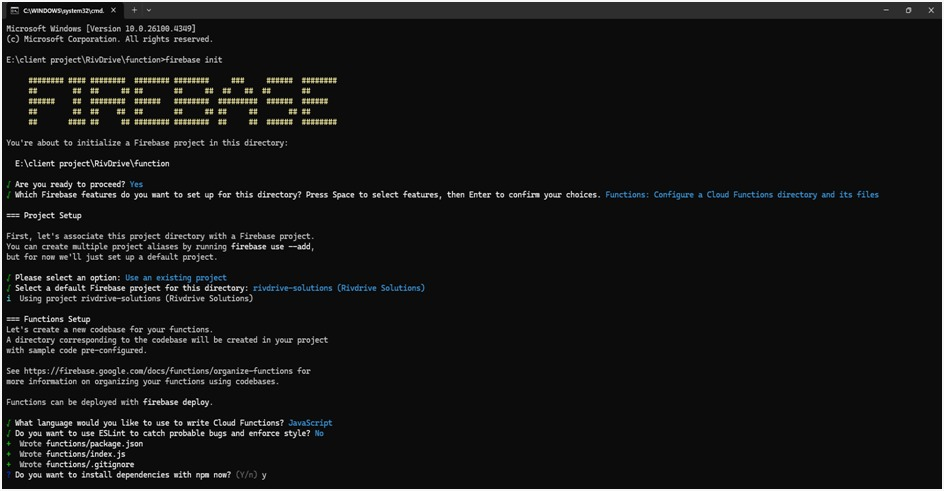
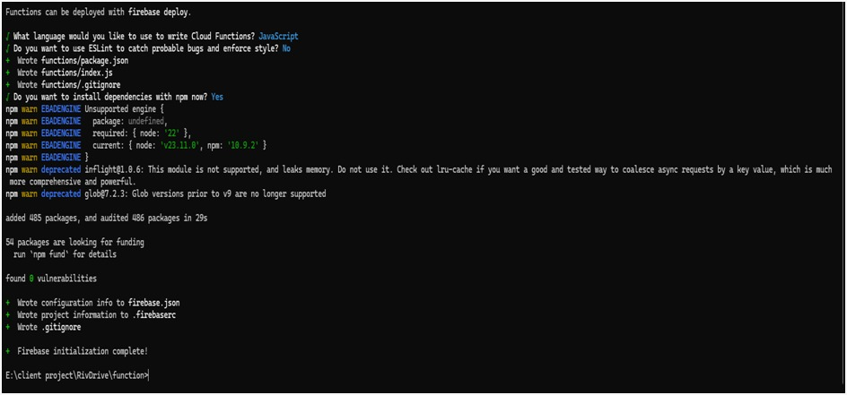
3. Install Function Dependencies
- Navigate to the functions/ directory (created during initialization), and install all
required Node.js packages:
cd functions
npm install
4. Deploy Your Functions
- Once everything is set up and you're ready to push your functions to Firebase, run:
firebase deploy --only functions
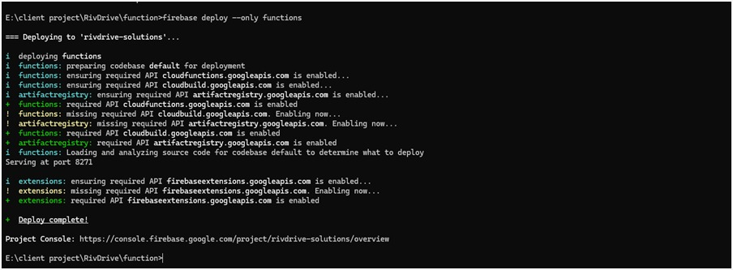
This will deploy only the cloud functions to your Firebase project without affecting
other Firebase services.
1. Install Node.js and npm
- Visit the official Node.js website: https://nodejs.org
- Download and install the LTS version compatible with your OS
(Windows/macOS/Linux).
- After installation, verify the setup using:
node -v
npm -v
2. Extract Database Files
- Locate your database.zip file.
- Extract its contents to a folder on your computer using your OS’s zip utility or a
tool like WinRAR/7-Zip.
3. Open Terminal or Command Prompt
- Navigate into the extracted folder using your terminal or command prompt.
- Example:
cd path/to/extracted/folder
4. Generate Firebase Service Account Key
- Go to the Firebase Console.
- Select your project, then go to Project Settings > Service accounts.
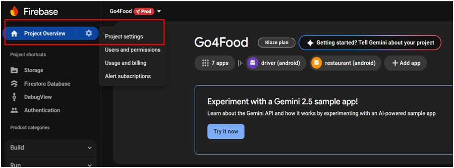
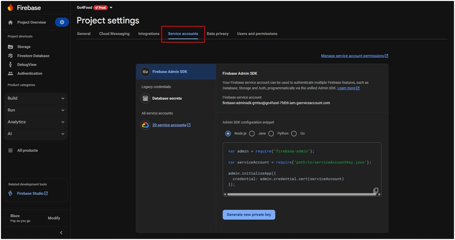
- Choose Node.js as the target platform.
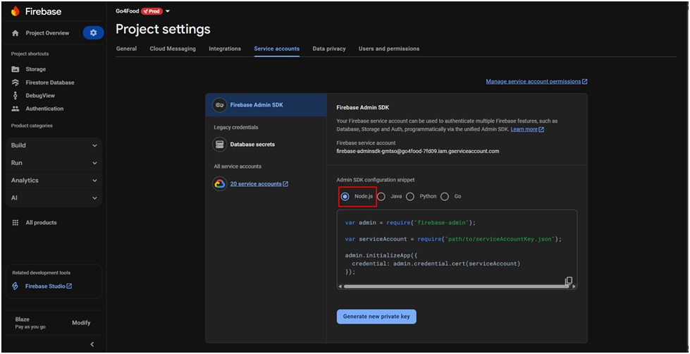
- Click Generate new private key.
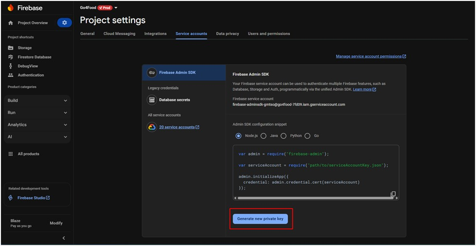
- A JSON key file will be downloaded automatically.
- Replace the existing config.json in your project folder with
this newly downloaded
file (rename it if needed).
5. Prepare config.json
- If config.json is not pre-existing:
- In Firebase Console, go to Project Settings > General.
- Scroll down to Your Apps > Firebase SDK snippet > Config.
- Copy the config object (not the script tag).
- In your project folder, create a file named config.json.
- Paste the config content inside the file and save it.
6. Run Import Command
npx -p node-firestore-import-export firestore-import -a config.json -b database.json
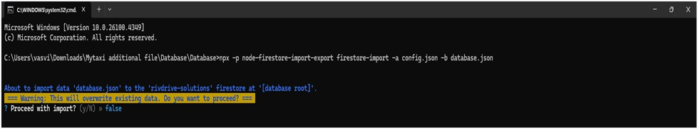
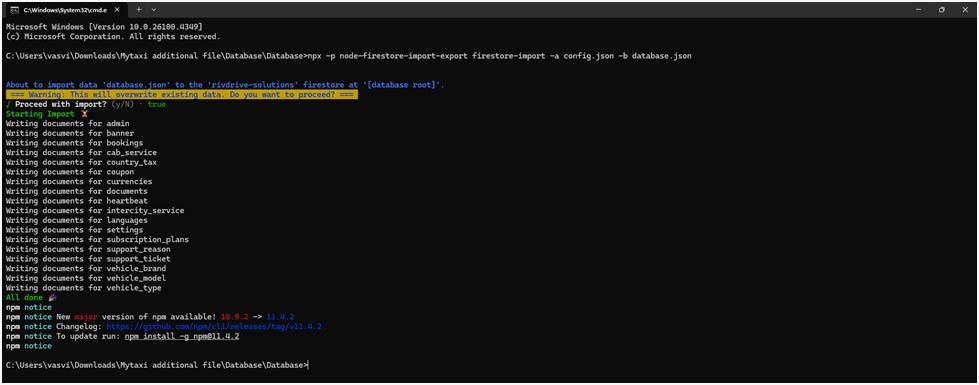
7. Run Export Command
npx -p node-firestore-import-export firestore-export -a config.json -b database.json
1. Navigate to Your Firebase Project Folder
- Open your terminal or command prompt.
- Use the cd (change directory) command to move into your Firebase project
folder:
- After installation, verify the setup using:
cd path/to/firestore_index
Replace path/to/firestore_index with the actual directory path where your
Firestore project files are located.
1. Open terminal and run the Command : firebase init
- Inside your project directory, initialize Firebase if you haven’t already:
firebase init
Follow the prompts to select services (make sure to enable Firestore if
prompted) and associate the project with your Firebase account.
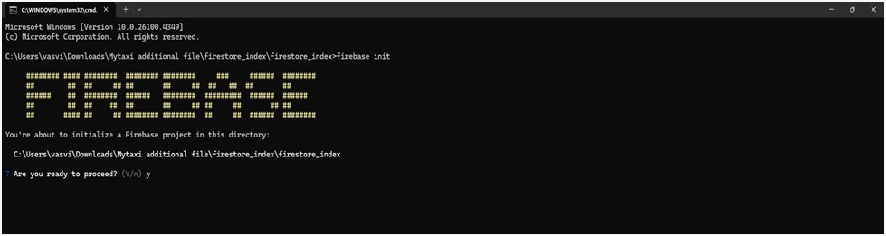
When prompted:
- Proceed? → Type y or select Yes
2. Select Firebase features: Use the arrow keys to navigate and press Space to select
- Firestore: Configure security rules and indexes files for Firestore.
- Press Enter to continue.
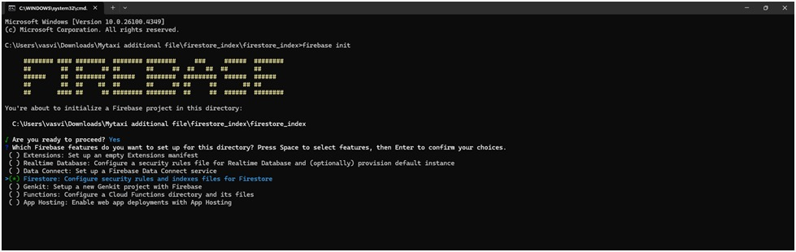
3. Choose Firebase Project
- Select the Firebase project you want to link.
- Use the arrow keys to choose and press Enter.
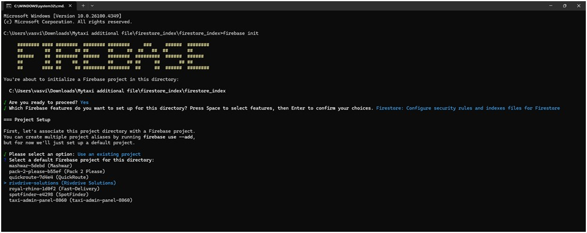
4. Set Up Firestore Rules and Indexes
- When prompted for Firestore rules file (e.g., firestore.rules), it will download
existing rules from Firebase.
- If the file already exists, you’ll be asked to overwrite or skip.
- When prompted for the Firestore indexes file (e.g., firestore.indexes.json),
confirm overwrite if needed.
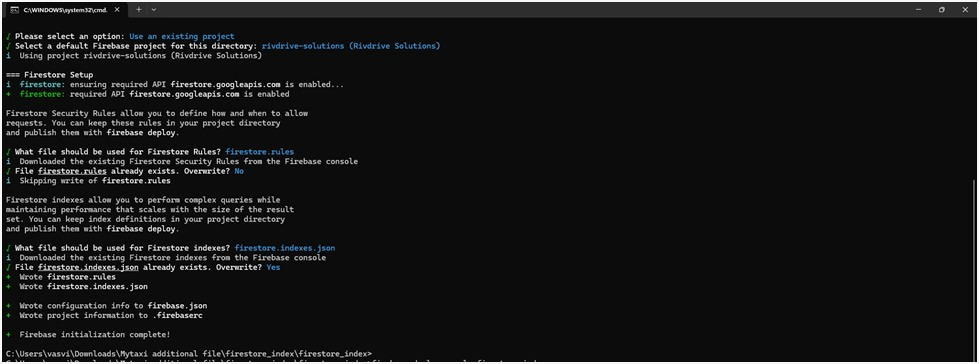
5. Deploy Only Firestore Indexes
- Now that firestore.indexes.json is available in your project folder,
deploy the indexes:
- Run the following command to deploy indexes defined in your
firestore.indexes.json file:
firebase deploy --only firestore:indexes
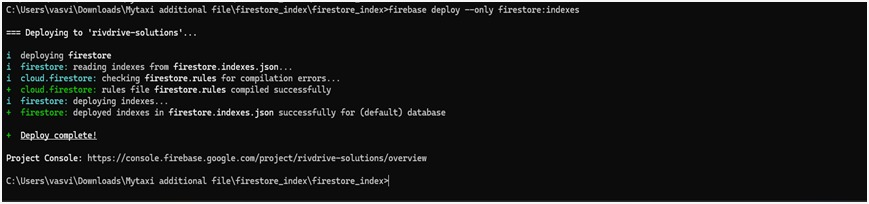
6. Deployment Complete
- You’ll see confirmation messages like:
Important Notes:
- Ensure you are inside the correct project directory before running any Firebase CLI
commands.
- You must have sufficient permissions (e.g., Editor or Owner role) in your Firebase
project to deploy indexes.
- Once deployed, Firestore queries will benefit from better performance as they’ll
use
the optimized indexes you’ve defined.
1. Generate a Google Maps API Key
- Go to the Google Cloud Console.
- Create a new project or select an existing one.
- Enable the following APIs for your project:
- Maps SDK for Android
- Maps SDK for iOS
- Maps JavaScript API
- Open the navigation menu and go to: APIs & Services > Credentials.
- Click on "Create Credentials" > "API key".
- Copy the newly generated API key — you’ll use it for Android, iOS, and Web setup.
2. Add API Key to Your Flutter Project
For Android:
- Open your Flutter project in Android Studio or any code editor.
- Navigate to the file: android/app/src/main/AndroidManifest.xml
- Inside the <application> tag, add the following:
<application
...
android:label="your_app_name">
<meta-data
android:name="com.google.android.geo.API_KEY"
android:value="YOUR_API_KEY"/>
...
</application>
For iOS (Swift):
- Open the iOS part of your Flutter project using Xcode.
- Open: ios/Runner/AppDelegate.swif
- In the application(_:didFinishLaunchingWithOptions:) method, add:
import GoogleMaps
GMSServices.provideAPIKey("YOUR_API_KEY")
For Flutter Web:
- Open your Flutter web project folder.
- Open: web/index.html
- Inside the <head> section, add the following <script>:
<head>
...
<script src="https://maps.googleapis.com/maps/api/js?key=YOUR_API_KEY&libraries=places"><script>
</head>
1. Generate SHA-1 and SHA-256 Keys
For Windows (Android Debug Keystore)
- Open Command Prompt.
- Navigate to the Java JDK bin directory. Usually:
C:\Program Files\Java\jdk\bin
- Run this command to generate the SHA-1 key:
keytool -list -v -keystore "%USERPROFILE%\.android\debug.keystore" -alias androiddebugkey -storepass android -keypass android
Run this command to generate the SHA-256 key:
keytool -list -v -keystore "%USERPROFILE%\.android\debug.keystore" -alias androiddebugkey -storepass android -keypass android -v
For macOS/Linux
- Open Terminal.
- Run this command to generate the SHA-1 key:
keytool -list -v -keystore ~/.android/debug.keystore -alias androiddebugkey -storepass android -keypass android
Run this command to generate the SHA-256 key:
keytool -list -v -keystore ~/.android/debug.keystore -alias androiddebugkey -storepass android -keypass android -v
2. Add SHA Keys to Firebase Console
- Copy the SHA-1 and SHA-256 keys generated.
- Open the Firebase Console.Select your project.
- Go to Project Settings > General tab.
- Scroll to the “Your apps” section and select your platform (e.g., Android).
- Click "Add Fingerprint", paste the SHA-1 and SHA-256 values.
- Click Save to apply the changes.
Important Notes:
- For release builds, use your custom keystore (not the default debug one).
- Keep your keystore file secure and never expose it publicly.
- You may need to regenerate SHA keys if you change your signing
configuration or keystore.
Important Notes:
This All Command are run project folder and android studio terminal
1. Build and deploy the admin panel using Firebase Hosting
- Install Firebase CLI (if not already installed)
npm install -g firebase-tools
Login to Firebase
firebase login
Run this inside your project folder
firebase init
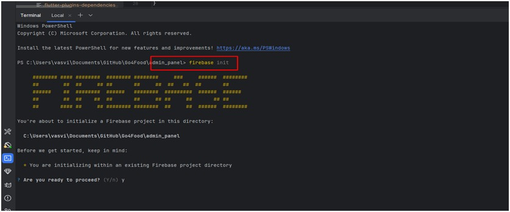
When prompted:
- Proceed? → Type y or select Yes
Select Firebase features: Use the arrow keys to navigate and press Space to select:
- Hosting: Configure files for Firebase Hosting and (optionally) set up
GitHub Action deploys
- Press Enter to continue.
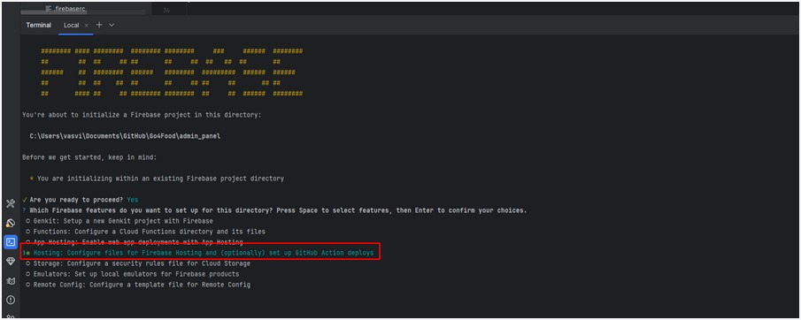
After it follow below step :
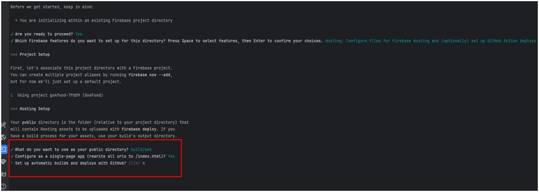
Press Enter to continue. And you see below Complete message:
- + Firbase Initialization complete!
After run this Command in terminal:
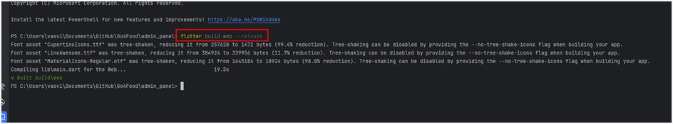
It Create release build for deployment.
After it run this Command to deploy on web:
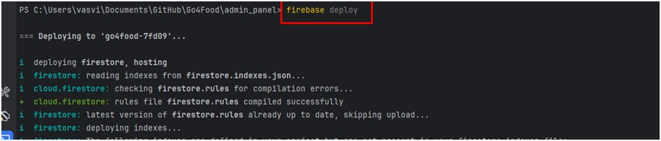
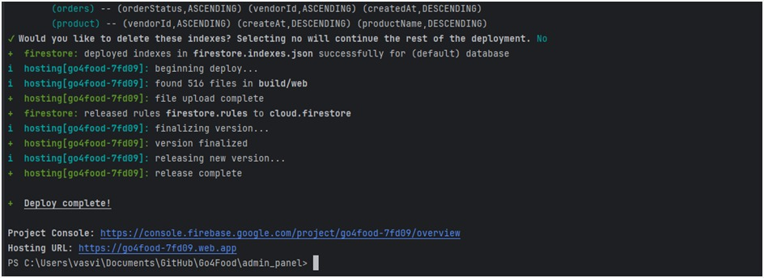
1. Using Command-Line Interface (CLI)
Open Terminal
- Launch your terminal (or command prompt).
- Use the cd command to move into your Flutter project directory:
cd path/to/your_flutter_project
Run the Flutter App
- Execute the following command to build and run your app on a connected
device or emulator.
flutter run
Using an Integrated Development Environment (IDE)
Android Studio
- Open Project:
- Launch Android Studio.
- Use the “Open” option to load your Flutter project.
- Run the App:
- Click the green Run ▶️ button in the toolbar.
- Choose your emulator or physical device from the device dropdownt.
- Android Studio will build and launch your app automatically.
Visual Studio Code (VS Code)
Open Project:
- Launch VS Code.
- Use File > Open Folder to open your Flutter project.
Run the App:
- Press Ctrl + Shift + P (or Cmd + Shift + P on macOS) to open the
Command Palette.
- Search for and select Flutter: Run.
- Choose your emulator or connected device from the list.
1. Get Notification SenderId
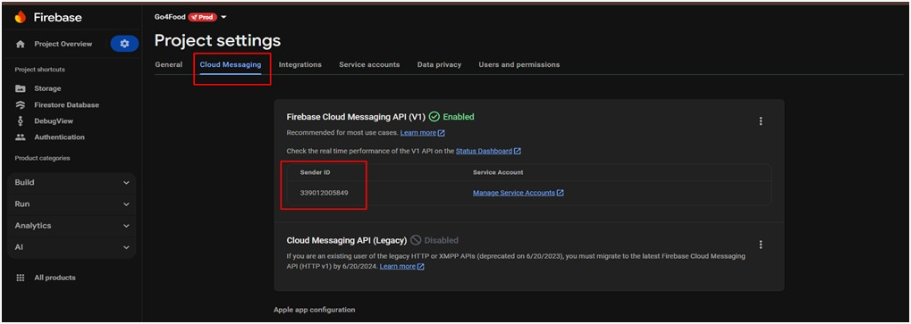
2. Get Json File
- Refer to Point 9 (Firestore Database Collection Import Export)
- In this show – 9.4 ( Generate Firebase Service Account Key ) –
this is the step to get Json File.
3. where to add in admin Panel ?
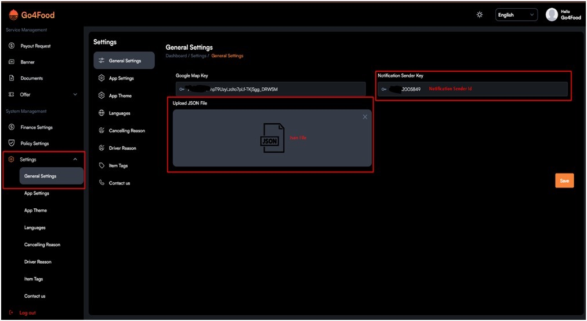